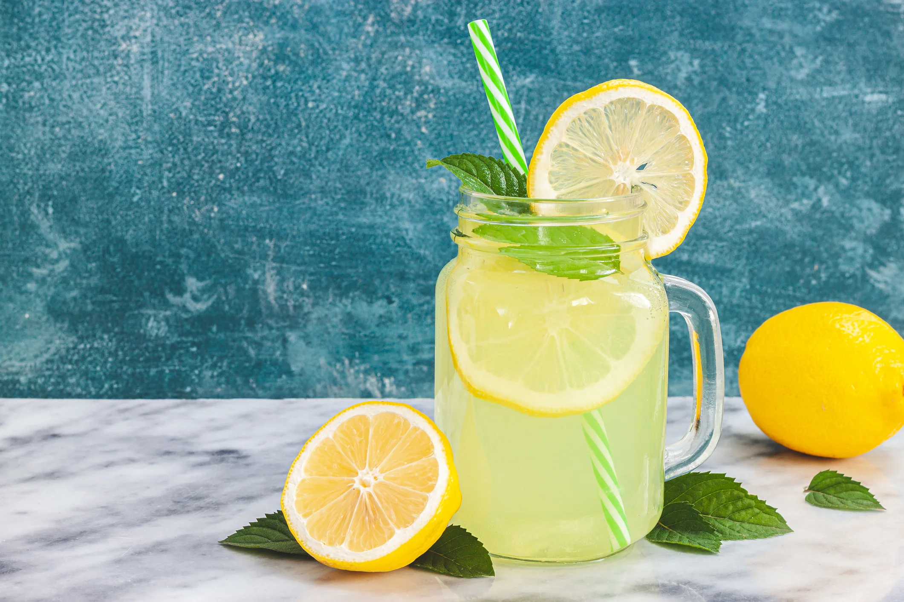

Lemonade

Description
It couldn't be easier to make this homemade lemonade with just a few simple ingredients you probably already have on hand.
Ingredients
- 3/4 cups white sugar
- 1 cup water
- 9 medium lemons or more as needed
- 7 cups ice-cold water
- ice as needed
Steps
- Combine sugar and 1 cup water in a small saucepan. Stir to dissolve sugar while mixture comes to a boil. Set aside to cool slightly.
- Meanwhile, roll lemons around on your counter to soften. Cut in half lengthwise, and squeeze into a liquid measuring cup. Add pulp to the juice, but discard any seeds. Continue juicing until you have 1 1/2 cups fresh juice and pulp.
- Pour 7 cups ice-cold water into a pitcher. Stir in lemon juice and pulp, then add simple syrup to taste. Add ice.